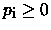
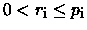

| Append |
Consider the following encoding scheme used in one famous compresion algorithm. Suppose we will code only sequences of lower case letters. Each such sequence of characters can be encoded to a sequence of pairs (pi, ri), where  is an integer and ri is either a character (if pi = 0) or an integer greater than zero and less or equal than pi (if pi > 0).
We describe now the decoding procedure for our encoding scheme. Let (p1, r1), (p2, r2), be a code of a sequence. We get the sequence as follows: we take successively individual pairs of the code. If pi = 0 then ri is a character and we simply add ri to the end of already decoded sequence. If pi > 0 then ri is an integer, , and we add to already decoded sequence ri letters from this sequence starting at the position pi places before the end.
For example, consider the sequence of pairs (0 a), (1, 1), (0, b), (3, 3), (3, 3), (3, 2), (0, c). Decoding (0, a) we get a. Decoding (1, 1) we get aa. (0, b) adds b getting aab. (3, 3) will add aab, so now we have aabaab. Next pair (3, 3) will again add aab so we have aabaabaab. (3, 2) will add aa, so our sequence is aabaabaabaa and (0, c) adds c. So the decoded sequence is aabaabaabaac. Note that in general for a given w it can exist more such sequences of pairs.
Let u, v be some sequences. By uv we will understand the sequence created by appending of the sequence v to the end of sequence u. Let Cw be a sequence of pairs which encodes a sequence of lowercase letters w. Suppose we have given a sequence of pairs Cw. The question is how many possibilities does exist for expressing the sequence Cw in the form Cu Cv where u, v are sequences satisfying the equation w = uv and neither u nor v is empty. Write a program that will answer this question.
0 a 1 1 0 b 3 3 3 3 3 2 0 c
1